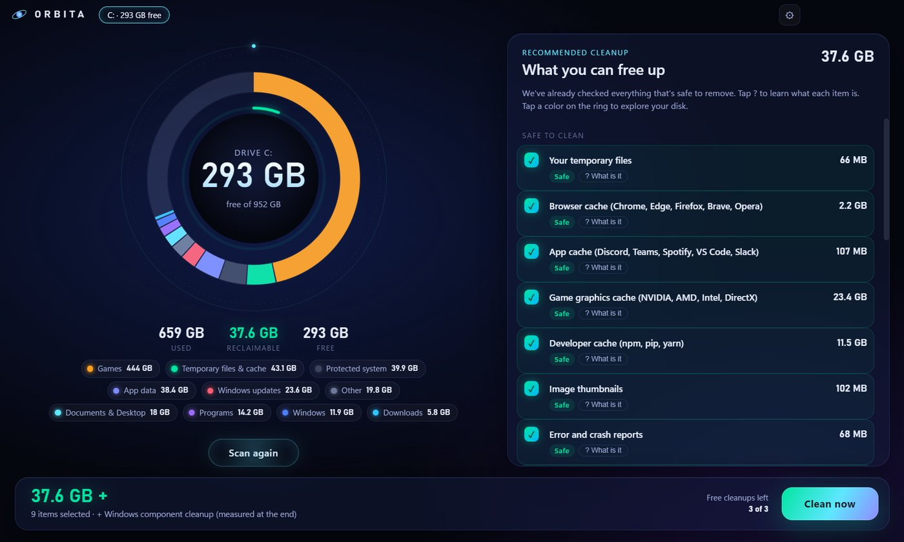

Orbita shows your whole Windows disk in one colorful ring. Everything that's safe to remove is already checked, and every item is explained in plain words, so you always know what you're deleting.

Windows tells you the disk is full. Orbita tells you why, and what you can safely do about it.
Games, caches, Windows updates, downloads: every color is a category. Tap one to see the biggest folders and files.
Only things that rebuild themselves: browser and app caches, temp files, old update packages, game shader caches.
"What is it?" tells you in plain words what each item is and what happens if you remove it. No jargon.
With Orbita Pro it cleans the safe stuff on its own once a week and sends you a notification.
On the developer's gaming PC, the first scan found:
ready to free, all safe
of NVIDIA graphics cache, from games played months ago
to read 800,000 files
Orbita deletes only inside a list of known cache and temp folders. Never your documents, never system files.
Big files you pick yourself go to the Recycle Bin, so you can always restore them.
Windows component cleanup runs through Microsoft's official tool (DISM), never by hand.
No accounts, no tracking, no file lists sent anywhere. The scan stays on your computer.
No subscription. The scan and the map are free forever.
Orbita is in its final tests. Write to us and you'll get the download before the public launch, at the launch price.
Ask for early accessOrbita only empties folders that programs rebuild by themselves (caches and temporary files). Files you choose by hand go to the Recycle Bin. Before any cleanup you see exactly what will be removed. As with any tool that deletes files, keep a backup of your important data.
Cleaning the graphics (shader) cache means each game rebuilds it the first time you launch it. After that, everything is as before.
Yes, Windows 10 and Windows 11, 64-bit.
No. Orbita works offline on your PC. The optional "What is it?" AI feature only works with your own API key and sends only folder names and sizes, never file contents.